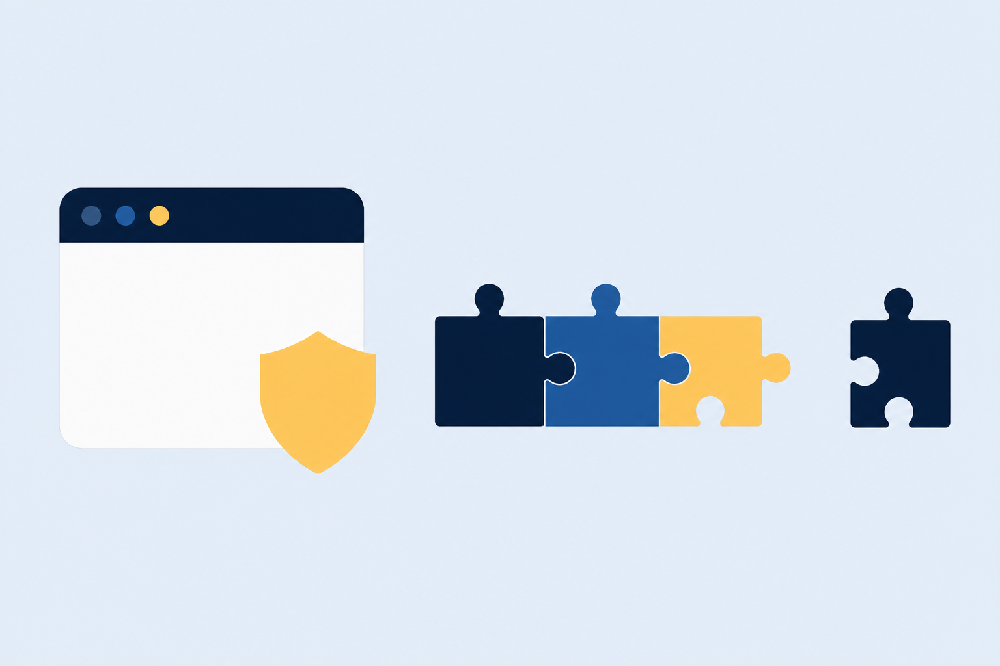
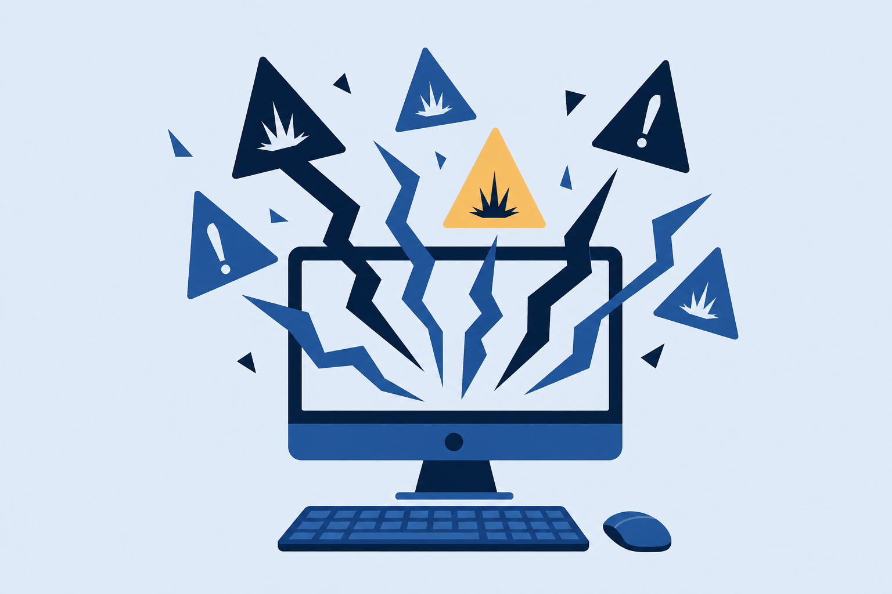
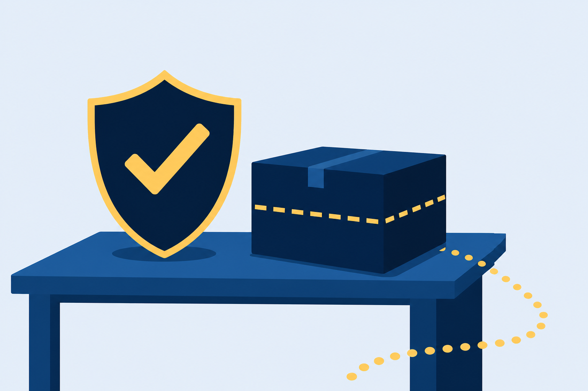

01
Harden
accounts and Windows security settings until only the right people can act.
Account security, workstation hardening, browser settings, and malware removal: the layered defenses that guard every endpoint.
Start here: Think of the last suspicious link you almost clicked. What stopped you? What would have stopped the click you didn’t catch?
accounts and Windows security settings until only the right people can act.
the browser: trusted installs, patches, certificates, and privacy settings.
malware by the book: detect, quarantine, remediate, prevent the rerun.
An email link, a download from an untrusted source, and this morning Windows Security raised a flag. One infection rides the whole class.
Every lesson today is a shield it should have hit.
One policy pane enforces the rules for every account on the machine.
Every idle service and extra admin account is one more door. Close what you do not use.
Not available in the Home edition of Windows.
With a partner: Name two 19.1 settings that shrink what the intruder can touch, and one that keeps strangers off the keyboard entirely.
Use AutoPlay for all media and devices
Already installed and unnecessary? Remove it. Fewer applications, fewer doors.
Everything else waits for a rule.
Neither ships in the Home edition. Check the edition before you promise encryption.
With a partner: Name the 19.2 shield behind each job, and the mechanism that does the work.
Downloaded file
SHA-1 digest
✕ Different digest? Do not install.
PUA: potentially unwanted application. Not definitively malicious, but increased privacy risk.

certmgr.msc # view installed authorities
Watch out: private browsing does not hide your web browsing from your ISP.
And the front-desk intruder? Windows Security stamps it PUA: unwanted, risky, and invited in by a person.

With a partner: Put the scan in its place. Which steps come first, and why is “quarantined” not the same as “removed”?
On-access scanning, scheduled scans, and an educated user keep this card from ever opening again.
Educate, not alienate.
Which default accounts do you change or disable, and what if you can’t?
What do a trusted source, a signature, and a matching hash each prove?
Recite the seven removal steps. Which two sit between verifying symptoms and remediation?

Next step: Run the CertMaster labs: Enforce Password Settings, Configure Microsoft Defender Antivirus, and Configure BitLocker with a TPM. The Challenge Lab: Resolve Security Tickets puts the whole hour to work. Module 20 moves the same fight to mobile.